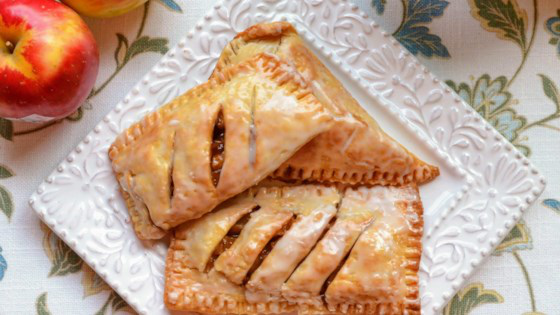

Greg's Cookbook - Air Fryer Apple Pies - Recipe #118
Air Fryer Apple Pies

"Mini hand pies filled with a buttery apple-cinnamon mixture and topped with a sweet powdered sugar
glaze. They bake in less than 10 minutes in an air fryer."
Source: allrecipes.com
Ingredients:
- 4 tablespoons butter
- 6 tables brown sugar
- 1 teaspoon ground cinnamon
- 2 medium Granny Smith apples, diced
- 1 teaspoon cornstarch
- 2 teaspoons cold water
- 1/2 (14 ounce) package pastry for a 9 inch double crust pie
- cooking spray
- 1/2 teaspoon grapeseed oil
- 1/4 cup powdered sugar
- 1 teaspoon milk, or more as needed
Instructions:
-
Combine apples, butter, brown sugar, and cinnamon in a non-stick skillet. Cook over medium heat until
apples
have softened, about 5 minutes.
-
Dissolve cornstarch in cold water. Stir into apple mixture and cook until sauce thickens, about 1
minute.
Remove apple pie filling from heat and set aside to cool while you prepare the crust.
-
Unroll pie crust on a lightly floured surface and roll out slightly to smooth the surface of the dough.
Cut
the dough into rectangles small enough so that 2 can fit in your air fryer at one time. Repeat with
remaining crust until you have 8 equal rectangles, re-rolling some of the scraps of dough if needed.
-
Wet the outer edges of 4 rectangles with water and place some apple filling in the center about 1/2-inch
from the edges. Roll out the remaining 4 rectangles so that they are slightly larger than the filled
ones.
Place these rectangles on top of the filling; crimp the edges with a fork to seal. Cut 4 small slits in
the
tops of the pies.
-
Spray the basket of an air fryer with cooking spray. Brush the tops of 2 pies with grapeseed oil and
transfer pies to the air fryer basket using a spatula.
-
Insert basket and set the temperature to 385 degrees F (195 degrees C). Bake until golden brown, about 8
minutes. Remove pies from the basket and repeat with the remaining 2 pies.
-
Mix together powdered sugar and milk in a small bowl. Brush glaze on warm pies and allow to dry. Serve
pies
warm or at room temperature.